国に認められた確かな技術と知識で
藤沢の患者様をお守りする
日本歯周病学会専門医・指導医に最年少で合格 玉木理一郎
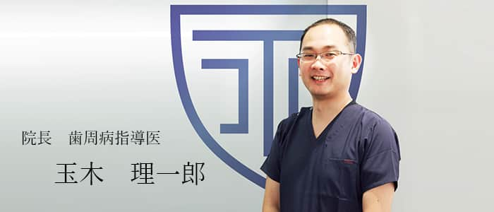
経歴
- 神奈川県立湘南高等学校卒業
- 日本大学歯学部卒業
- 日本歯周病学会専門医・指導医
- 日本歯周病学会専門医研修施設長
- 日本歯科審美学会認定医
- 厚生労働省歯科医師臨床研修指導医
- 日本大学歯学部兼任講師（組織・発生学）
- ICOI（International Congress of Oral Implantologists）Active member
- UCLA歯周病・インプラントポストグラデュエイトコース修了
- 日本口腔インプラント学会会員
- 日本顕微鏡歯科学会会員
論文・学会発表
海外
【2010年11月】
Micro-CT observation of angiogenesis in guided bone regeneration. The 50th Aniniversary, General Session and International Congress of the Korean Academy of Periodontology , Grand Hilton Seoul, Seoul
Korea ,11/27-28,2010.
【2012年10月】
Influence of nicotine concentration on bone augmentation. The 20th Annual Scientific Meeting of the European Association of Osseointegration, Copenhagen, Denmark,10/10-13,2012.
さらに見る
国内
【2003年4月】
矯正科との連携治療により非外科処置にて改善をみた重度歯周炎の一症例 . 日本歯周病学会学術大会プログラムおよび講演抄録集第46巻：158,2003.
【2009年9月】
低出力超音波刺激はStreptococcus属の付着を阻害する . 日本歯周病学会学術大会プログラムおよび講演抄録集第52巻：89,2009.
【2012年9月】
広汎型中等度慢性歯周炎患者に対し切除療法と歯周組織再生療法で対応した一症例 . 日本歯周病学会学術大会プログラムおよび講演抄録集第55巻：102,2012.
【2013年9月】
広汎型侵襲性歯周炎患者にエムドゲインを用いた歯周組織再生療法と矯正治療を行った一症例 . 日本歯周病学会学術大会プログラムおよび講演抄録集第56巻：135,2013.
【2016年4月】
ラット下顎角骨欠損に対するosteogenic protein‐1添加コラーゲン膜の影響 . 日本歯周病学会学術大会プログラムおよび講演抄録集第58巻：137,2016
【2017年5月】
広汎型中等度および限局型重度慢性歯周炎患者の口腔機能回復治療にインプラント補綴を用いた包括的治療を行った一症例 . 日本歯周病学会学術大会プログラムおよび講演抄録集第59巻：157,2017
【2017年6月】
歯冠長延長術とプレスセラミックスを用いて審美的改善を行った一症例 . 日本顎咬合学会第35回学術大会
【2018年6月】
美しい口腔内規格写真を撮影するために知るべき傾向と対策 . 日本顎咬合学会第36回学術大会
【2018年9月】
オールセラミックスクラウンと歯肉弁根尖側移動術を用いて審美的改善を図った一症例 . 日本歯科審美学会第29回学術大会
【2019年11月】
歯周炎患者の欠損補綴にインプラント治療を用いて包括的診療を行った一症例 . 日本歯科審美学会第30回学術大会
前歯部インプラントにロール法を用いて低侵襲に審美的改善を図った一症例 . 日本歯科審美学会第30回学術大会
【2020年12月】
トラフグTakifugu rubripes嘴状歯の構造と歯切りの影響 . 日大歯学
【2021年11月】
審美と機能を両立させた全顎的補綴治療 . 日本歯科審美学会第32回学術大会
さらに見る
厳しい審査基準をクリア 日本歯周病学会指導医とは？
歯周病治療のスペシャリスト 日本歯周病学会指導医
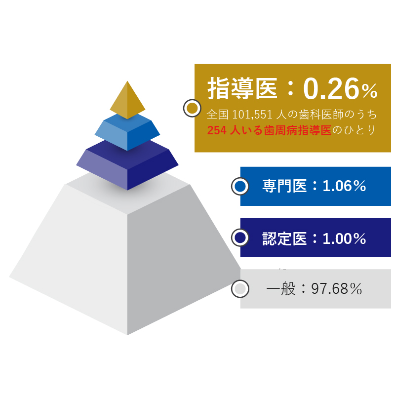
日本歯周病学会指導医とは、全国に約10万人いる歯科医師の中で、たった254人（2019年8月末現在）しかいない歯周病治療のスペシャリストです。日本歯周病学会指導医の資格取得者は今までに310人おり、そのうち今も現役で治療を行っている歯科医師（所属先がある歯科医師）が254人で、当院院長の玉木はそのうちの1人です。
日本歯周病学会に所属し、認定医・専門医を経て、厳しい基準をクリアして初めて指導医になることができます。指導医は、認定医・専門医を目指す歯科医師に対し、歯周病治療の正しい知識と技術を教え、育成する役割を担っています。いわば、「歯科医師を教育する歯科医師」ということなのです。
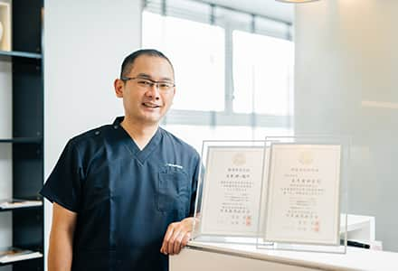
当院の院長は、その日本歯周病学会指導医に最年少で合格しました。指導医登録後、5年毎に更新があります。資格維持のために、学会発表や講演、歯周病に関する最新知識・技術を継続的に学ぶなど、専門知識のさらなる蓄積のため日々の研鑽を欠かしません。
国に認められた専門医
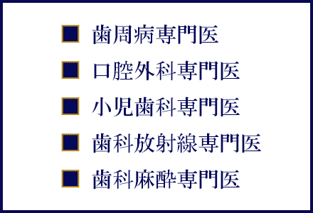
日本歯周病学会専門医・指導医とは、厚生労働省の認可のもと、日本歯周病学会が歯周病に関する十分な知識や技術があると認定したものに与える資格です。つまり国が認めた専門医ということになり、医療広告が認められています。現在、国に認められ医療広告が可能な専門医は「歯周病専門医」「口腔外科専門医」「小児歯科専門医」「歯科放射線専門医」「歯科麻酔専門医」の5つのみです。この5つ以外の専門医の表記は、一般に広告できません。
個人診療所では数少ない国の認定医院
日本歯周病学会専門医研修施設とは？
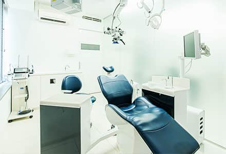
当院は、日本歯周病学会から「専門医研修施設」の認定を受けた歯科医院です。日本歯周病学会指導医が常勤として在籍し、歯周病学に関連する課題について定期的に教育・研修が行なわれており、必要な設備のある医院のみが認定されます。ほとんどの認定医院が大学病院の歯周病科などである中、当院のように個人の歯科医院が認定されることは極めて稀なことです。多くの治療選択肢の中から、一般の歯科医院では行うことができない治療法や抜歯を回避する治療法などを各分野の専門医と連携しながら提供しております。
私の生い立ちから開業まで
歯科医師へのあこがれ
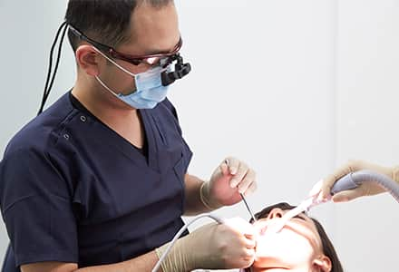
会社員の父と教師の母との間に生まれた私は親戚に医師・歯科医師はほとんどいない家系で育ちました。高校入学後、漠然と将来は会社員になるものとして卒業後の進路をイメージしていたのですが、二年生の時に夜も眠れないほどの歯の痛みを一瞬にして取り除いてくれた先生の治療技術と優しい人柄に感動して歯科医師に強い憧れを抱くようになりました。それをきっかけに、自分が経験したように、人の役に立てる歯科医師を目指す決心をしました。
目標を共有し乗り越える経験
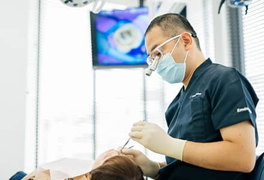
親からもらったお金で遊んでいた同級生に違和感を覚えた私は、学習塾講師のアルバイトにのめり込んでいました。興味深い授業をしないと生徒を惹きつけることができず、さらに結果も求められる環境でしたので一人の人間としてそれまでの学歴や肩書きを超越する人間力を高められるかを常に考えていました。大学や学部の異なる仲間たちに出会い、今では皆、各分野で活躍しているので自分に刺激を与えてくれるありがたい存在です。塾講師の仕事は、 わかりやすい教材を作ったり、理解してもらうためにはどのような説明をしたらよいか悩んだりもしました。それぞれの生徒と「志望校に合格する」というゴールを設定し、そのための課題、たとえば定期テストで目標を達成することに向けてプログラムを作成し、ひとつひとつ一緒に課題を乗り越えていくようにしていました。そうした経験が現在の仕事に活かされています。
工夫しながら勉強を教えていく中で強く実感したことは、「双方間で目標を共有する大切さ」です。診療においても、これから何を行おうとしているのか患者さんと「目標を共有」できていないと、患者さんは信頼、安心できないと思うのです。しっかりと目標について共有できれば、次に必要なのが治療計画の立案です。この処置をしたらこうなります、この治療が向かう先はここです、といった具合に、将来を予測できるよう資料を用いてシミュレーションします。その共有したイメージ通りに治療が進み、実際に状態が良くなっていくのを目に見える効果として感じてもらうことで、その先の治療へのモチベーションを上げていきます。私は患者さんの「口腔内を良くしたい」という気持ちを全力でサポートをさせていただきたいと思います。
歯科医師としてのスタート
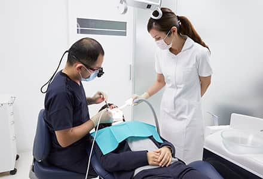
大学4年生に進級した時に元日本歯周病学会理事長である伊藤公一先生（当時、日本大学歯学部歯周病学講座教授）と出会った私は歯周病学・インプラント治療に興味を持ち、大学卒業後は伊藤公一教授の紹介により理事長が日本歯周病学会指導医である歯周病・インプラント専門医院で勤務医生活を開始すると同時に日本大学歯学部歯周病科の論文抄読会、症例検討会に参加するようになりました。
学生時代の病院実習である程度、歯科医師としてやっていける手応えは掴んでいましたが 勤務が始まってから院長、先輩歯科医師の治療を見て自分の未熟さを痛感しました。頭では分かっていても経験・技術不足のせいか院長や先輩歯科医師のようにスピーディーで精度の高い治療ができなかったこと、大学では診療科目ごとに治療方法を学ぶのですが実際の患者さんでは複数の診療科目にまたがって進行していることがほとんどでしたのでアプローチの仕方に悩んだ事をきっかけに私は多数の講習会・セミナーに参加し診療後、休日のほぼ全ての時間を勉強・練習に充てました。また歯周病・インプラント治療以外にもあらゆる分野の第一人者に師事し研鑽を積んだことにより様々な疾患を持つ患者さんに対応できるようになりました。
患者様が気づかせてくれたこと
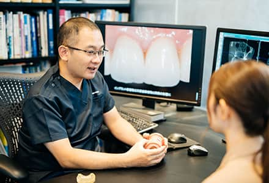
合わない入れ歯が原因で、自分だけ食べるのが遅く、恥ずかしさから人と食事に行くのが億劫だった患者様。その方に合った治療を提供すると、見違えるように噛めるようになり、自分から友人をお食事に誘う機会も増え、旅行にも楽しんで行けるようになったと嬉しそうにお話してくださいました。いくつになっても“ちゃんと噛める“、見た目もきれいで機能面的にも良い歯があれば、何事にも気負いなく人生を笑顔で過ごせるということを教えてくれました。人生を大きく左右する、一生涯のパートナーである歯の健康を、いつまでも守っていける存在でいたいと考えています。
また、普段、患者様を診療していて「歯の健康は全身の健康とつながっている」ということを日々感じます。「残っている歯の本数とその人の元気さは正比例している」と言っても過言ではありません。人生100年時代と言われる現代で楽しい老後には健康な歯が不可欠だと思います。ですから、決して諦めず、早めに治療を開始していただき、長く元気でいてもらえることを真に願っています。 最近では、医療技術の進歩と優れた材料の開発に よって、一昔前では治らないとされていたケースでも、治療による効果が確認できるようになってきました。 特に歯周病については、成人の約85％が発症していると言われていますから、歯茎から出血したり、歯がぐらついたり、「あれ、何だかおかしいな」と思ったら早めの受診をおすすめします。
患者さんの問題に徹底的に向き合う
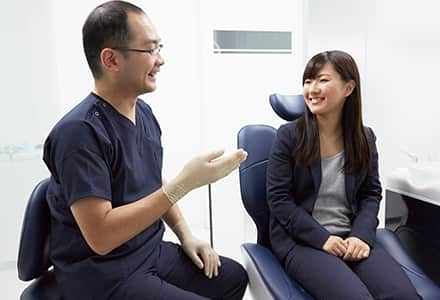
大学卒業後、5年経過時には日本歯周病学会専門医を取得（最年少で合格）して勤務していた医療法人の分院長としてたくさんの患者さんを担当していました。しかし全員の患者さんに精一杯の治療を提供していたのですが治療後10年くらい経過すると再治療が必要になる事もあり、永続性（長持ちする）のある治療を最大のモットーにしていた自分には大変ショックな事で眠れない日々が続きました。
原因を徹底追求し全ての分野の治療法を検証してみると、それまで精一杯治療している自負はありましたが結果的には「つもり」だったのです。ブラッシュアップした結果、永続性のある治療法の極意を掴んだとともに患者さんの長い人生で万が一、何か問題が生じたとしてもそれまでよりも劇的に負担が少なくリカバリーできる術も学びました。そして自分の培った治療技術により私が生まれ育ち、健康・教育への意識の高い藤沢の人達に恩返しがしたくて地元での開業を決意しました。
患者さんの豊かな生活をどう守れるか
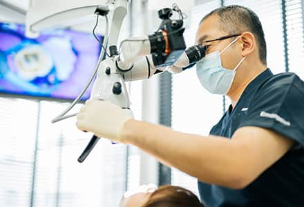
一流の技術とそれを叶えられる充実した設備を持たなければならないと考え、日本歯周病学会専門医・指導医の資格を取得しました。さらに、当院は日本歯周病学会専門医研修施設にも認定されております。たとえ他院では断られてしまうような、難しい症例に対しても、諦めることなく治療ができるよう、海外研修で最新技術を学んだり、専門医と連携できる環境を整えたりと、日々腕を磨き学び続けています。
私たちのもとへ足を運んでくださった患者様には、笑顔でより幸せな人生を歩んでいただけるよう、一人ひとりに真剣に向き合い、正しい知識と技術で必ず悩みを解決します。現状に満足せず、実直に、丁寧に、常に最善を尽くしてまいります。
私は決して天才肌ではないので自分が分からないことや治療を進めていく上で悩んだ時に相談・アドバイスしてくれる先生が各治療分野におり、とてもありがたい存在でした。自分が長い時間をかけ苦労して得た様々な知識・技術・経験を若い世代の先生が短時間で回り道せず身に付けられるようにしたいと考えております。現代の歯科医療は私が大学を卒業した頃と比べて格段に医療機器や材料が進化し、求められる治療レベルもそれ以上に上がってきています。私がかつて御世話になった先生達のように困っている患者さんや若い先生をサポートできる存在になりたいと思っています。
今後について
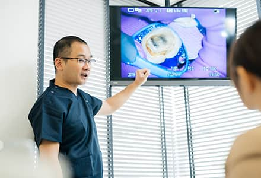
勤務医時代の理事長先生には大学卒業間もない私に手取り足取り指導してくれました。最高の診療環境を整えてくれただけではなくあらゆる面で大変良くしてもらい今でもとても感謝しています。技術面のみならず医療人としての心構えをはじめとして専門書や論文をいくら読んでも得られない事もたくさん教えてくれた師匠であり恩人であり第二の父親のような存在です。理事長先生が多くの歯周病専門医を育成したように私も指導医として皆様のお役に立てる歯周病専門医を育成して社会貢献していきたいと考えております。
医院として目指す方向
働いてくれるスタッフに最高の環境を提供するのが自分の役目だと考えております。そのためには最新医療機器などの導入や院内勉強会、院内カンファレンスを積極的に行って知識・技術レベルの向上を図っています。
目指している歯科医院像
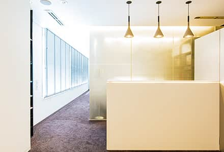
「関わった人すべてが“幸せになれる”歯科医院」が理想像です。私ひとりではなく、たくさんの方々の助けがあってこそ、患者さんの笑顔が見られると実感しているので、患者さんやスタッフはもちろんですが、技工所さん、材料屋さん、機器メーカーさんに至る、当院と関わりがある方には全員が幸せになってほしいと思いますし、互いに敬意を持って接する関係でありたいです。そしてそれが地元藤沢への恩返しにつながるのが私の願いです。
治療への想い

日本歯周病学会指導医を取得した後も診療以外のほとんどの時間を学会・勉強会・研修会・大学兼任講師の職務に費やしています。生まれ変わってもまた歯科医師になりたいと思うほど自分の仕事が大好きで患者さんが喜んでくれることが、私の喜びです。今まで培った経験・知識・技術の全てを賭けて来院してくださった患者さんに、誠心誠意の治療を提供したいと考えております。